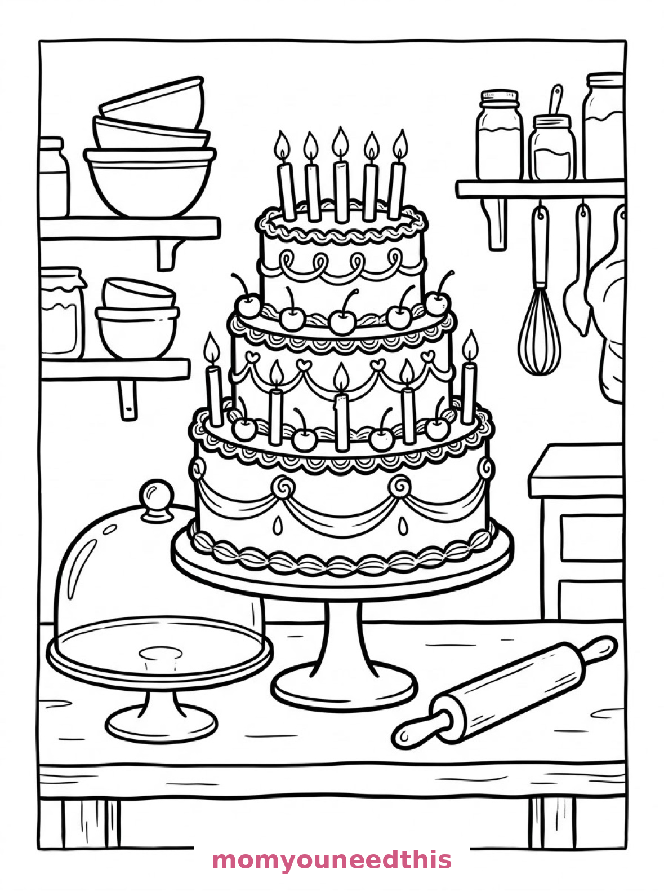
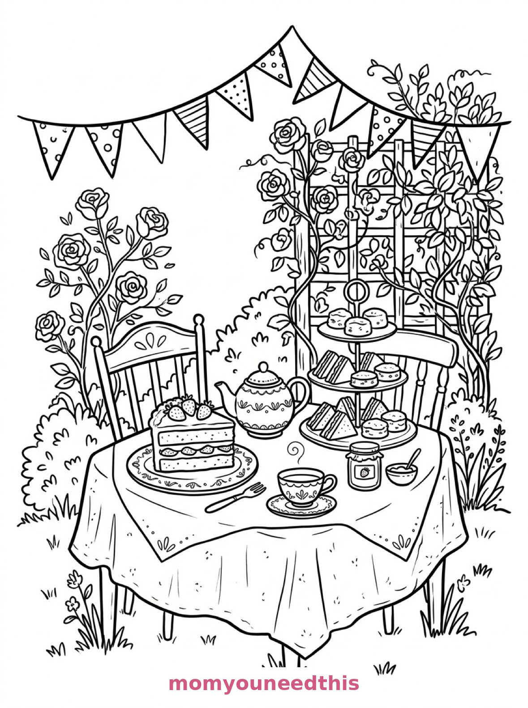
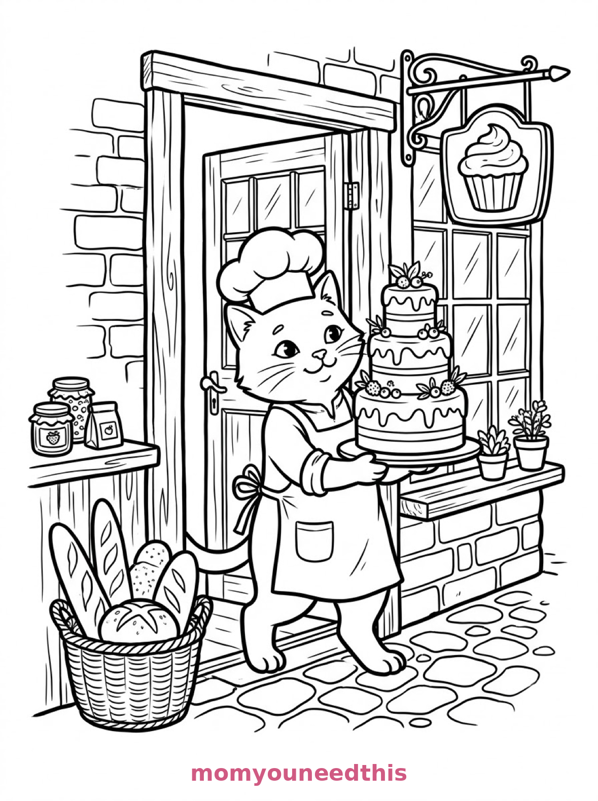

Free Cake Coloring Pages Birthday, Tea Party & Baker Cat Printables
These free cake coloring pages serve up three sweet scenes — a three-tier birthday cake with five candles, a strawberry cake slice at a garden tea party, and a baker cat carrying a chocolate cake through a bakery. Download the set below, print at home on letter-size paper, and let the coloring fun begin. No signup needed.
Last updated: October 23, 2026
Quick Answer
Yes — this page has three free printable cake coloring pages: a three-tier birthday cake with lit candles, a slice of strawberry cake at a garden tea party, and a baker cat carrying a chocolate cake through a bakery. Bold outlines and big spaces, made for little hands. Download, print on letter-size paper, and hand over the crayons — no signup, no cost.
At a Glance
- Ages: 3–8
- Pages: 3 free printables
- Format: Print at home, letter size
- Cost: Free, no signup
- Supplies: Crayons or markers
- Time: 10–20 minutes
🎂 Three-Tier Birthday Cake Coloring Page

🎨 Download Your Free Birthday Cake Coloring Page
A three-tier birthday cake on a bakery table, each tier decorated with piped borders, cherries and five lit candles, with a glass cake dome, a rolling pin and mixing bowls behind — bold outlines, big spaces, zero signup.
⬇️ Download Free Birthday Cake Page 🖨️ Print Birthday Cake Page🎁 Free printable for preschoolers & kids
🍰 Strawberry Cake at a Tea Party Coloring Page

🎨 Download Your Free Tea Party Cake Coloring Page
A slice of layered strawberry cake on a plate beside a teapot and teacup, with a tiered stand of scones and sandwiches, bunting overhead and roses climbing a trellis — bold outlines, big spaces, zero signup.
⬇️ Download Free Tea Party Cake Page 🖨️ Print Tea Party Cake Page🎁 Free printable for preschoolers & kids
🐱 Baker Cat with a Chocolate Cake Coloring Page

🎨 Download Your Free Baker Cat Coloring Page
A baker cat in an apron carries a tall chocolate cake through a bakery doorway, with loaves of bread in a basket, jars of jam on a counter and a cupcake-shaped sign above the window — bold outlines, big spaces, zero signup.
⬇️ Download Free Baker Cat Page 🖨️ Print Baker Cat Page🎁 Free printable for preschoolers & kids
More Coloring Pages
Tap any picture to open its theme page and download the free printable.


🎂 How To Use This Page
- Browse the three designs and pick the cake scene your child will love most.
- Tap download or print under that design — the file opens full-size, ready for letter-size paper.
- Print a couple of copies of the birthday cake — every copy is a new flavor.
- Color together with crayons or markers and plan the party.
🍰 Why Kids Love Cake Coloring Pages
Cake is celebration, and coloring one is a little party all by itself. These pages give kids three very different cakes to decorate: a grand birthday cake with five candles, a delicate tea-party slice, and a chocolate cake carried by a very professional cat. Frosting that can be any color, candles, cherries, icing borders — every page is a design decision waiting to happen.
Cake pages are also wonderfully forgiving. A tier is a big, bold shape; a cherry is a dot; a candle flame is a flick of yellow. Young colorers can finish a whole cake fast and feel like pros, while older kids can spend real time on the piped borders and patterns. Print one on a birthday morning or a rainy afternoon and the decorating starts long before any real cake appears — with considerably less washing up afterward, too.
🧁 Meet the Three Cake Scenes on This Page
The three-tier birthday cake. A three-tier birthday cake stands on a bakery table, each tier decorated with piped borders and cherries, with five lit candles on top, a glass cake dome, a rolling pin and mixing bowls on the shelves behind. It is the classic page in the set — three big tiers, five flames to color, and endless frosting possibilities.
The strawberry tea party. A slice of layered strawberry cake sits on a plate beside a teapot and a teacup in a garden tea party scene, with a tiered stand of scones and sandwiches, bunting overhead and roses climbing a trellis behind the table. It is the prettiest page in the set and the one older kids spend longest on.
The baker cat. A baker cat in an apron carries a tall chocolate cake through a bakery doorway, with loaves of bread in a basket, jars of jam on a counter and a hanging sign shaped like a cupcake above the shop window. It is the most story-like page in the set — where is that cake going, and who ordered it?
✏️ Cake Coloring Tips
- Give every tier its own flavor color. Pink strawberry, chocolate brown, lemon yellow — or all three tiers in rainbow stripes. Frosting follows no rules.
- Color the candle flames last. Yellow and orange flames against a white cake read as “lit” instantly.
- Use the cherries as color pops. Red cherries scattered on pastel frosting are the fastest way to make the whole cake look finished.
- Name the cake. “Mia's triple-chocolate mountain” — writing the name under the design turns the page into a bakery order.
🎂 Coloring Pages for Different Ages
For ages 3 to 4, start with the birthday cake. Three big tiers and five flames are all a little colorer needs, and the cherries are perfect dot-practice.
For ages 5 to 6, the tea party slice is the sweet spot. The slice is still a big, friendly shape, but the teapot, the scones and the roses add just enough detail to feel like a project.
For ages 7 to 8, hand over the baker cat. The bakery doorway, the bread basket, the jam jars and the cupcake sign reward careful coloring, and the tall chocolate cake is deeply satisfying to shade evenly.
🍰 More Cake Fun After Coloring
Hold a cake-decorating vote: print the birthday cake three times, let everyone color their own version, and pick a family favorite. The winner gets to choose the next coloring page.
For more sweet things to color, the cupcake coloring pages are the natural next stop — and the candy coloring pages continue the bakery story with a candy shop, a sweet still life and a gingerbread house.
🔗 More Free Printables You’ll Love
- Free Cupcake Coloring Pages Cupcakes to print and color, with bold outlines and big spaces.
- Free Candy Coloring Pages A candy shop, a sweet still life and a gingerbread house to color.
- Free Food Coloring Pages Tasty treats and food scenes to print and color.
- All Free Coloring Pages Browse every free coloring page on the site, organized by theme.
❓ Cake Coloring Pages FAQ
Are these cake coloring pages really free?
Yes — all three designs on this page are free original printables from MomYouNeedThis. Download them, print them at home, and color — no signup and no cost.
What ages are these coloring pages best for?
Kids ages 3 to 8 get the most from this set. The birthday cake is the gentlest start for younger children, while the tea party and baker cat scenes have the detail older kids enjoy.
How do I print a coloring page?
Tap the download button under the design you want, then print the file on regular letter-size paper. The print button opens the full-size page in a new tab if you prefer to print from there.
Is there a birthday cake in this set?
Yes — the first design is a three-tier birthday cake with piped borders, cherries and five lit candles, set on a bakery table with a glass dome and mixing bowls behind.
Can I make a cake coloring book from these pages?
Yes — print all three designs, stack them in order, and staple along the left edge. Add a cover sheet with your child's name for a finished homemade cake coloring book.